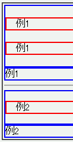
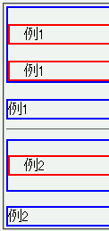

2003-11-07修正。Opera7.2でバグが解消しました。
入れ子関係にある複数の要素間ではマージンの相殺が行われることがあるが、Opera7ではこれが正しく行われない。ボーダーやパディングを挟む入れ子関係にあるにも関わらず以下のような状態になる。
<div style="border:2px solid blue;"> <p style="border:2px solid red;">例1</p> <p style="border:2px solid red;">例1</p> </div> <div style="border:2px solid blue;">例1</div> <hr> <div style="border:2px solid blue;"> <p style="margin:1em 0; border:2px solid red;">例2</p> </div> <div style="border:2px solid blue;">例2</div>
例1
例1
例2
例1は親要素に下マージンが設置されてしまう現象、例2は子要素と親要素の両方に下マージンが設置されてしまう現象の例です。
WinIE6.0での表示（標準モード）
Opera7.11での表示（標準モード）